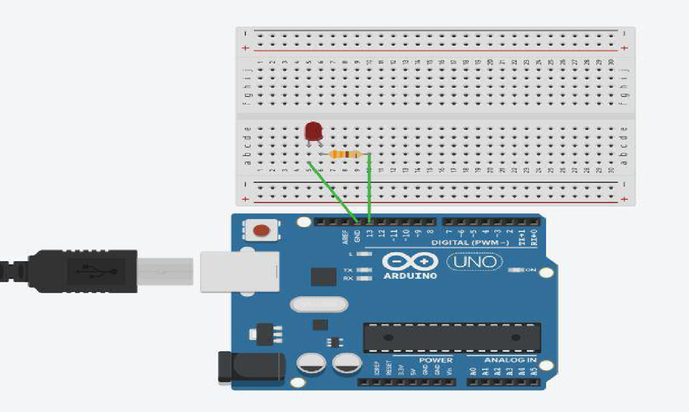

Interfacing a Light Emitting Diode (LED) and making it blink is one of the simplest projects you can do with an Arduino.
Components Required
- Arduino board (e.g., Arduino Uno)
- Breadboard and jumper wires
- LED (any color)
- Resistor (220-330 ohms)
Circuit Connections
- Connect the positive (longer leg) of the LED to a digital pin on the Arduino (Pin 13).
- Connect the negative (shorter leg) of the LED to a current-limiting resistor (220-330 ohms).
- Connect the other end of the resistor to the ground (GND) on the Arduino.

Arduino Code
const int ledPin = 13; // Pin connected to the LED
void setup() {
pinMode(ledPin, OUTPUT); // Set the LED pin as an output
}
void loop() {
digitalWrite(ledPin, HIGH); // Turn on the LED
delay(1000); // Wait for 1 second
digitalWrite(ledPin, LOW); // Turn off the LED
delay(1000); // Wait for 1 second
}